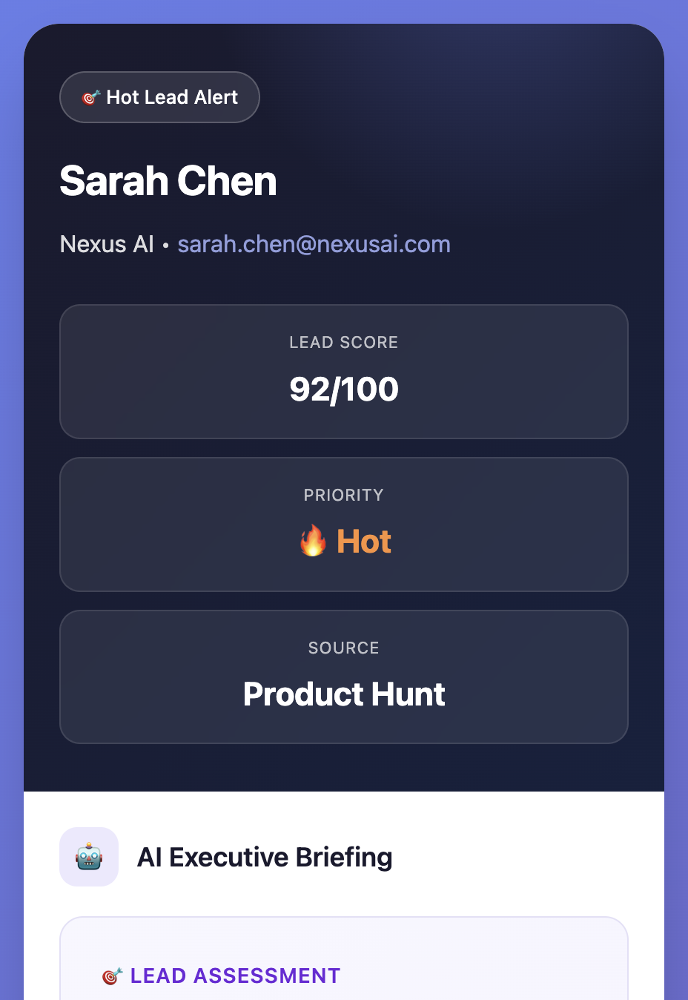

A few examples of AI workflows I've built, including GTM intelligence tools, ad generation, social listening, and more. These are systems built to solve for scale and speed.
Turn hours of sales recordings into instant, actionable insights. AI-powered analysis of call transcripts surfaces objections, competitor mentions, deal patterns, and coaching opportunities—giving GTM, PMMs and PMs direct access to customer intelligence without enterprise pricing.
Instantly research every inbound lead with AI-powered deep dives. Automatically pulls company intel, recent news, competitive landscape, and person profiles, then generates executive briefings with personalized conversation starters.
Screenshot any ad you love, send it to Telegram, and get brand-consistent product ads in seconds. AI analyzes composition, mood, and style, then generates polished Meta-ready creatives in multiple formats, maintaining your exact product and brand aesthetic.
Generate authentic, influencer-style product videos with AI. Input your product image and a script, get natural, candid videos that look like real creator content—not AI. Built for TikTok, Reels, and Shorts with casual iPhone-quality aesthetics for a fraction of the price of an influencer.
New automation workflows are being developed. Check back soon for more AI-powered solutions.
Every growth team has unique challenges. Let's discuss how to automate your specific bottlenecks.
Let's Build Together